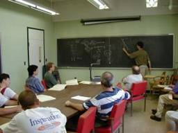
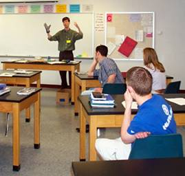

Lectures for Teachers Lectures for High School Students
These lectures were given to teachers at past PARTICLE summer institutes.

These lectures were given to students as part of PARTICLE's classroom outreach component.